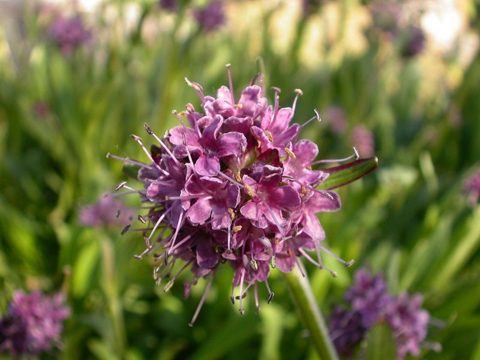
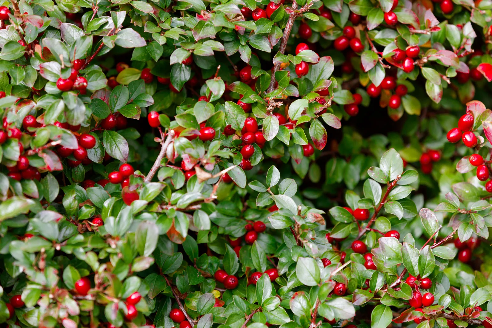

Introduction
We all know that Uttarakhand is known as the “Land of Gods” or “Devbhoomi.” The state borders Himachal Pradesh to the northwest, Tibet to the north, Nepal to the east, and Uttar Pradesh to the south.
Many of us have visited this serene land, but very few have paused to explore its hidden treasures—the traditional herbs of Uttarakhand. Tourists usually overlook them, but trekkers and nature lovers are often familiar with these medicinal plants. Anyone who loves nature, wellness, or herbal knowledge should explore the traditional herbs found here.
From the lush valleys of Chamoli to the high-altitude meadows of Pithoragarh, every leaf and root carries a story of resilience, purity, divine wisdom, and the tranquility of Devbhoomi. Below are some of the most important traditional herbs that form the herbal identity of Uttarakhand.
Ashwagandha (Indian Ginseng)

Advantages
- Helps improve both mental and physical health.
- Reduces stress and improves sleep quality; useful for people with insomnia.
- Helps balance high cortisol levels.
- Improves muscle strength, endurance, and immunity.
- Known to support healthy aging and reduce inflammation and pain.
- May help improve memory and reduce risk factors linked to certain chronic conditions.
Disadvantages
- Overconsumption may negatively affect the liver.
- Can cause drowsiness, diarrhoea, or vomiting in some individuals.
- May increase thyroid activity; people with hyperthyroidism or borderline thyroid levels should avoid it.
- Not recommended during pregnancy.
- May lower blood sugar levels, so diabetic patients must use it cautiously.
Giloy

Advantages
- Traditionally used to strengthen immunity and support recovery during fevers.
- Helps manage respiratory issues like cough and bronchitis.
- Supports liver health and may help regulate blood sugar levels.
- Improves blood circulation and boosts energy.
Disadvantages
- May excessively lower blood sugar and blood pressure, especially for people on related medications.
- Can overstimulate the immune system and may worsen autoimmune conditions.
- Not recommended for pregnant or breastfeeding women.
Kutki
Advantages
- Traditionally used for liver disorders such as hepatitis, jaundice, and fatty liver.
- Rich in antioxidants that support liver protection.
- Improves digestion and helps reduce constipation and indigestion.
- Used for certain respiratory and skin-related issues.
Disadvantages
- Should not be used during diarrhoea or severe stomach upset.
- May cause allergic reactions in sensitive individuals.
- Not recommended for pregnant women.
Jatamansi (Spikenard)
Advantages
- Its bitter nature makes it useful for purifying blood and supporting skin health.
- Improves brain functions, promotes relaxation, and enhances complexion.
- Strengthens immunity and relieves burning sensations due to its Pitta-balancing properties.
- Used for psychiatric conditions and helps reduce symptoms of depression.
- Supports appetite regulation and provides liver-protective benefits.
Disadvantages
- Should be used carefully by individuals with high blood pressure.
- Overuse may cause nausea or vomiting.
- People with allergies may experience serious reactions even with small doses.
- Pregnant or breastfeeding women should avoid it, as it may stimulate menstrual discharge.
Wintergreen
Advantages
- Provides relief from pain and inflammation.
- Helps reduce menstrual cramps.
- Eases headaches and sprains.
- Used in aromatherapy for stress relief.
- Supports skin and hair health when used properly.
Disadvantages
- May cause skin irritation in sensitive individuals.
- Wintergreen oil is toxic if consumed or used excessively, leading to vomiting, seizures, and organ damage.
- Contains methyl salicylate, which can cause salicylate poisoning if misused.
- Pregnant or nursing women and people allergic to wintergreen should avoid it.
Monkshood (Aconite)
.jpg)
Advantages
- Traditionally used to reduce fever associated with colds and pneumonia.
- Used as a traditional analgesic for neuralgia, rheumatism, sciatica, and joint pain.
Disadvantages
- Highly toxic if used improperly; can be absorbed through the skin.
- Symptoms of toxicity include nausea, vomiting, tingling, numbness, burning sensations, low blood pressure, irregular heartbeat, paralysis, and respiratory failure.
- In Ayurveda, aconite undergoes “Shodhana” (purification) to reduce toxicity, but improper processing leaves harmful toxins.
Himalayan Angelica
Advantages
- Traditionally used as a digestive stimulant and appetite enhancer.
- Provides relief from gas, bloating, and indigestion.
- Its roots and seeds are aromatic and used as spices in Garhwali and Kumaoni cuisine.
- Contains anti-inflammatory and analgesic compounds used in local poultices and oils.
- Used in folk medicine for menstrual cramps and postpartum recovery.
Disadvantages
- May stimulate uterine contractions and is therefore avoided during pregnancy.
- High demand sometimes leads to adulteration with inferior substitutes, reducing safety.
- Excess intake of essential oils or extracts may cause nausea or headaches.
- May cause skin sensitivity to sunlight when applied externally.
Other Common Herbs
Uttarakhand is rich in medicinal plants that thrive naturally in its diverse Himalayan climate. Apart from rare high-altitude species, many common herbs are used daily in local households and traditional medicine. These include Tulsi, Lemongrass, Mint, Aloe vera, Brahmi, Neem, Himalayan Nettle, and many more. Countless herbs remain unknown to us and still need to be explored.
Conclusion
Uttarakhand, blessed with the rich biodiversity of the Himalayas, is truly the herbal state of India. The region is home to numerous valuable herbs such as Jatamansi, Kutki, Tulsi, and Aloe vera, which have been an integral part of traditional medicine, food, and daily life for centuries. However, due to overharvesting, deforestation, and climate change, many of these species are now threatened.
To preserve this natural heritage, there is a strong need for sustainable cultivation, conservation efforts, and awareness among local communities. Protecting these medicinal plants will support both human health and the ecological balance of Uttarakhand’s environment.